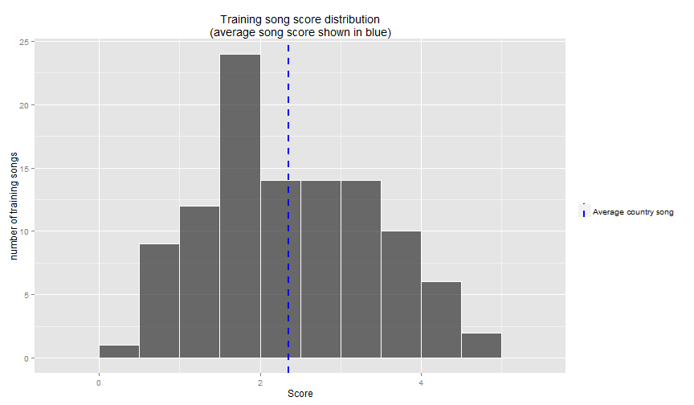

Is My Song Country?
A ShinyApp that can judge the chords in your song for "countryness"
mdiplacido
Motivation
- I play guitar, and I wondered if I could write an app to judge my song chord sequences.
- Could I write a simple ShinyApp that could determine if my song uses country chord sequences?
- If you like country this app will give you a sense for how "Country" your chord sequences are
- If you don't like country then you can use this app to avoid country chord sequences
How it works
- Scrape 100+ popular country songs from http://www.countrytabs.com/
- Learn a model for the sequences of chords per song
- For example a song could have the following chord sequences:
- D -> DaddC -> Em7 -> Gm+Bb -> C -> F -> Esus4 -> E
- The model would learn the following sequences:
- D
- D -> DaddC
- D -> DaddC -> Em7
- DaddC -> Em7 -> Gm+Bb
- Em7 -> Gm+Bb -> C
- Gm+Bb -> C -> F
- C -> F -> Esus4
- F -> Esus4 -> E
How it works continued...
- Now that we've learned all the sequences we can compute the frequency distribution of any given chord given the previous 2 chords
- With this frequency distribution we can score the training set songs which should reveal a score distribution where 0 is the most like country
and 100 is least like country (see next slide for example score distribution)
- The ShinyApp can now use the model to:
- Score the sequence of chords in your song
- Compare your score to the scored training set songs
Training set score distribution

Conclusion
- This is a very naive implementation, but the spirit of the idea is hopefully compelling
- Some ideas for making it better
- Learn other music genres
- After learning other genres could we ask each model for a score and the model with the lowest score determines the class?
- eg. Country, Jazz, Rock, etc.
- There is a lot of information loss when you just look at chord sequences, music has tempo, melody, time signatures, etc. All of these features can contribute to the song genre. Modeling these features seems like a good next step, but beyond the scope of this project.
- try it out! https://mdiplacido.shinyapps.io/IsMySongCountry/